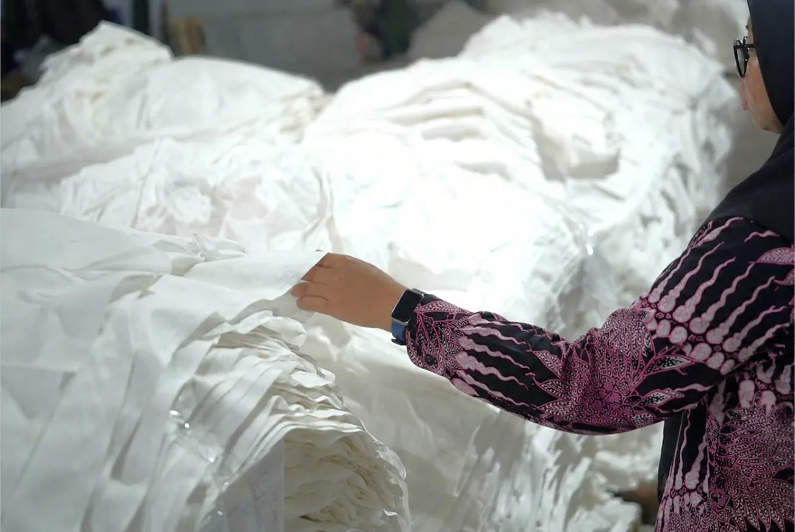

Mengenal Jenis Bahan Tekstil: Cotton, Rayon, Polyester, TC, dan TR
Ketika memilih kain, motif biasanya menjadi salah satu hal pertama yang diperhatikan.
Namun, ada hal lain yang tidak kalah penting: bahan yang digunakan.
Jenis material dapat memengaruhi karakter kain, mulai dari rasa saat digunakan hingga kesesuaiannya dengan produk yang akan dibuat.
Di PT Kusuma Kencana Mulya, proses produksi menggunakan berbagai jenis material, termasuk cotton, rayon, polyester, serta kombinasi material seperti cotton-polyester dan polyester-rayon.
Cotton
Cotton merupakan material yang berasal dari serat kapas dan banyak digunakan dalam berbagai kebutuhan tekstil.
Karakter cotton membuatnya menjadi salah satu material yang umum digunakan untuk produk pakaian dan kebutuhan tekstil lainnya.
Rayon
Rayon dikenal dengan karakter kain yang lembut dan memiliki jatuh kain yang khas.
Material ini banyak digunakan untuk berbagai produk fashion dan tekstil yang membutuhkan karakter kain yang ringan dan nyaman.
Polyester
Polyester merupakan material sintetis yang banyak digunakan dalam industri tekstil.
Karakteristiknya membuat polyester dapat digunakan untuk berbagai kebutuhan produk, tergantung spesifikasi dan proses produksi yang digunakan.
TC
TC merupakan material yang merupakan kombinasi serat cotton dan polyester.
Kombinasi tersebut memberikan karakter tersendiri pada kain dan dapat digunakan untuk kebutuhan produk tertentu.
TR
TR merupakan kombinasi material polyester dan rayon.
Karakter kedua material tersebut menghasilkan jenis kain dengan karakter yang berbeda dibandingkan cotton maupun polyester secara terpisah.
Memilih Bahan Sesuai Kebutuhan
Tidak ada satu bahan yang selalu cocok untuk semua produk.
Pemilihan material perlu mempertimbangkan jenis produk, karakter yang diinginkan, kebutuhan penggunaan, serta proses produksi yang akan dilakukan.
Karena itu, sebelum menentukan motif dan warna, memahami kebutuhan produk menjadi langkah awal yang penting.
Dengan bahan yang tepat, desain dan proses produksi dapat diarahkan untuk menghasilkan kain yang sesuai dengan tujuan akhirnya.
Karena setiap produk memiliki kebutuhan yang berbeda, dan setiap kebutuhan membutuhkan material yang tepat.